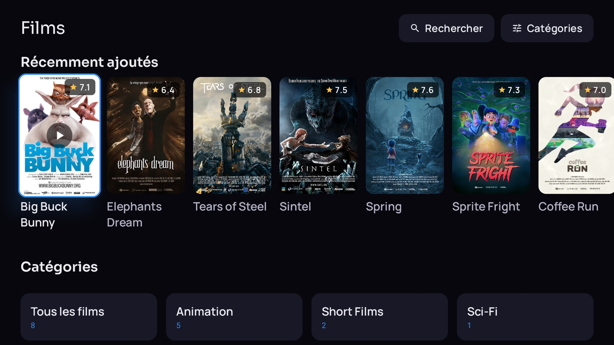
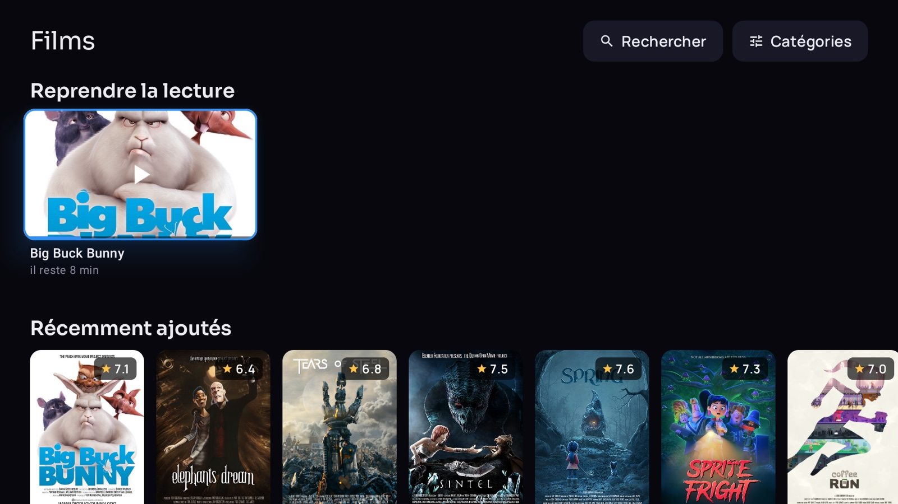
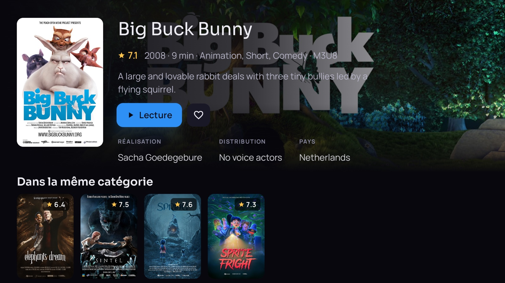
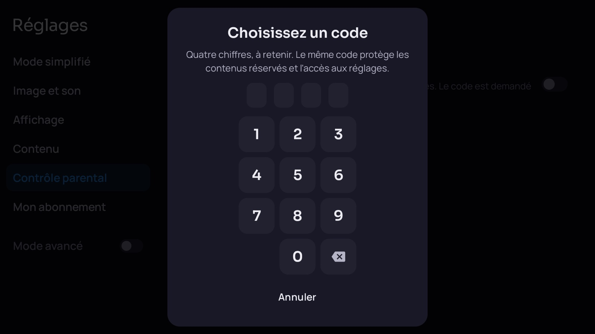

Votre abonnement mérite mieux qu'une liste de chaînes.
VymoTV en fait une vraie télévision : l'émission en cours s'affiche sous chaque chaîne, le programme tient sur un écran, vos films reprennent où vous les aviez laissés. À la télécommande depuis le canapé, à la souris sur l'ordinateur, au doigt sur le téléphone.
Android TV, Mac, Windows, Android · aucun compte VymoTV à créer

Télécharger
Quel Mac ai-je ? Menu Pomme → À propos de ce Mac. « Puce Apple M… » pour le premier fichier, « Processeur Intel » pour le second.
À la première ouverture, macOS et Windows signalent une application qu'ils ne connaissent pas encore. Sur Mac : clic droit sur l'application, puis Ouvrir. Sur Windows : Informations complémentaires, puis Exécuter quand même. Une seule fois.
Sur Android, le fichier vient d'ici et non d'une boutique : le système demande l'autorisation d'installer depuis cette source, au moment où il en a besoin.
Ce que ça change au quotidien
On voit ce qui passe, pas des noms
La mosaïque du direct affiche sous chaque chaîne l'émission en cours et une barre qui dit où elle en est. On choisit avec les yeux, pas en lisant une liste.
Une rubrique « Récemment vues » remonte celles que vous venez de regarder, et un appui long ouvre la chaîne : ses favoris, sa soirée, et le replay quand le serveur le permet.

Le programme, sans chercher
Les chaînes à gauche, leur journée à droite, une barre qui suit l'heure. Un champ de recherche pour retrouver une chaîne par son nom, des filtres pour ne garder que le sport, l'info ou les enfants.
C'est aussi là qu'on masque pour de bon une chaîne qui ne sert jamais. Elle disparaît alors de la mosaïque aussi : réglé une fois, réglé partout.

Les films reprennent tout seuls
Les affiches, la note, la catégorie : on reconnaît un film avant de lire son titre. Et s'il reste en cours, la reprise est proposée directement depuis la liste — pas besoin de rouvrir la fiche pour retrouver où on en était.
Les séries suivent le même principe, épisode par épisode.

Une fiche par titre
Le résumé, la note, l'année, la durée, la réalisation, la distribution, le pays — et, en dessous, les titres voisins de la même catégorie, pour ne pas repartir de la liste quand celui-ci ne convient pas.

Un lecteur qui ne demande rien
Barre de progression, sous-titres et pistes audio à portée d'OK, retour arrière quand le serveur le permet. Chaque écran rappelle en bas ce que font les touches : personne n'a besoin d'apprendre quoi que ce soit.

Et une version pour ceux que ça dépasse
Un réglage, et l'accueil ne garde que trois grandes portes : Direct, Films, Séries. Le clavier, les réglages du lecteur et les informations d'abonnement disparaissent, et le direct s'ouvre directement sur les favoris.
Un second réglage agrandit tous les textes. Un code à quatre chiffres peut verrouiller les réglages, pour que rien ne se dérègle par accident.

Un contrôle parental qui verrouille ce que vous désignez
Un code à quatre chiffres protège les catégories que vous choisissez, une par une — pas un interrupteur qui protège on ne sait quoi. Elles demandent le code pour s'ouvrir, et un réglage à part fait disparaître les contenus réservés aux adultes.
Le même code peut verrouiller les réglages eux-mêmes, pour que rien ne se dérègle par accident.

Huit langues
L'interface suit la langue du système, sans rien à régler. Et si quelqu'un du foyer préfère une autre langue que celle de l'écran, Android laisse la choisir application par application. L'arabe se lit de droite à gauche, et l'interface se retourne avec : le logo passe à droite, les portes se lisent dans le bon ordre. Les dates, les heures et les nombres suivent la langue partout — « 28 septembre 2026 » ici, « September 28, 2026 » là.
Tous les réglages
| Mode simplifié | Les trois portes, le très grand texte, les rayons à garder, le verrouillage des réglages |
| Image et son | Qualité préférée, format de l'image, langue des dialogues et des sous-titres |
| Affichage | Taille du texte, couleur d'accent, écran de démarrage, animations, images de fond |
| Contenu | Pays affichés, contenus adultes, reprise de lecture, regroupement par qualité, chaînes masquées |
| Contrôle parental | Le code à quatre chiffres, les catégories verrouillées une par une |
| Mon abonnement | État, date d'expiration, adresse du serveur, mise à jour du contenu et de l'application |
| Lecture avancée | Mémoire tampon, décodage matériel, tunneling, pas de saut, seuil « terminé » |
| TV en direct | Zapping par numéro, numéros et logos, durée du bandeau, annonce de fin d'émission |
| Guide des programmes | Source (API du panel ou XMLTV), décalage horaire, jours de rattrapage, import complet |
| Serveur | Format de flux (TS ou HLS), mode compatible pour le rattrapage |
| Réseau et cache | Résolveur DNS chiffré, serveur relais, délais, réessais, fraîcheur du catalogue |
Et aussi
La recherche marche hors ligne
Films, séries et chaînes déjà reçus sont cherchés sur l'appareil. Deux lettres suffisent, et la dictée évite le clavier quand la télécommande en a un micro.
Plusieurs abonnements
On enregistre plusieurs accès et on passe de l'un à l'autre depuis l'accueil. Chacun garde ses favoris, ses reprises et ses réglages.
Ça s'ouvre même quand ça rame
Le catalogue et le programme restent en mémoire sur l'appareil. L'application s'affiche immédiatement et se met à jour en arrière-plan, sans écran de chargement.
Rien ne sort de chez vous
Aucune régie publicitaire, aucune mesure d'audience, aucun rapport de plantage. Vos identifiants restent sur l'appareil et ne partent qu'au serveur que vous avez indiqué.
Les mises à jour arrivent seules
L'application vérifie s'il existe une version plus récente et propose de l'installer. Pas de fichier à retélécharger à la main tous les mois.
L'installer sur votre téléviseur
Ouvrez Downloader sur votre téléviseur et saisissez ce code.
Sans Downloader, le bouton en haut de page télécharge directement l'APK.
- Depuis le Play Store de votre téléviseur, installez Downloader (l'application à l'icône orange).
- Ouvrez-la et saisissez le code ci-dessus, puis validez.
- Android demandera l'autorisation d'installer depuis cette source : acceptez.
- Ouvrez VymoTV et saisissez l'adresse de votre serveur et vos identifiants.
VymoTV est un lecteur. Il n'héberge, ne fournit et ne vend aucun contenu : il affiche celui de l'abonnement que vous possédez déjà, et dont vous saisissez vous-même l'adresse et les identifiants.